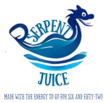

What is Serpent Juice?
Ever find yourself stranded in the Sea of Serpents during mating season? You look out across the ocean, watching while the water froths up into terrifying swarms of teeth and … well, mostly teeth. So many teeth. Teeth and horny rage.
Don’t worry, we’ve all been there. Introducing Serpent Juice, the only energy drink that's scientifically proven[1] to give you the speed and stamina needed to outrun even the most terrifying aquatic predators! Crafted with the might of the ocean's fury, this drink is your one-way ticket to survival!
"It's serpent juice, it's juice for the sea serpents. See some serpents in the sea, [drink some] Serpent Juice. No more serpents. Easy as...juice. Sea juice."
Why Serpent Juice?
- Blazing Speed: Feel the rush of adrenaline as Serpent Juice boosts your speed to outrun anything from deadlines to sea serpents. With every sip, you’ll channel the power of ancient sailors who escaped the jaws of these oceanic nightmares.
- Tidal Wave of Flavor: A tidal wave of tropical fruits mixed with a secret ingredient (hint: it’s not teeth). It’s like drinking the ocean’s fury, minus the salt and terror.
- Fang-Free Focus: Need to stay sharp while dodging those snapping jaws? Our blend of natural stimulants and vitamins will keep you focused and alert, ready to outmaneuver even the craftiest of creatures.
- Endurance of a Thousand Swims: Whether you’re swimming for your life or just trying to get through a tough day, Serpent Juice gives you the endurance to keep going... and going... and going... like 6 and 52 kind of going.
What People Are Saying
"So many teeth. Too many teeth. An unseemly number of teeth. Embarrassing for them."
-- Avra
"Those things have teeth that’ll bite an oar in half."
-- Papa Kavo
"That’s a lot of teeth."
-- Monsieur Helvaçi
"...objectionable number of teeth."
-- Anonymous Poet
"Serpent Juice didn’t just give me energy—it gave me the speed to outrun the fastest sea serpent in the Seven Seas!"
-- Oskar, probably
FAQs
- Will Serpent Juice actually help me outrun sea serpents?
- Absolutely. Our customers have survived to tell the tale[2].
- Is Serpent Juice safe for landlubbers?
- Yes! It’s perfect for anyone needing a burst of speed, whether you’re escaping serpents or rush hour traffic.
- What does Serpent Juice taste like?
- Imagine the ocean’s fury, the thrill of the chase, and a splash of tropical fruits. But don’t worry, no serpent aftertaste. Or teeth.
- Where can I buy Serpent Juice?
- Stop by The Running Sun while in the Isle of Lost Souls. Ask for Captain az-Ḥaffār[3].
- If you are not able to visit the Isle of Lost Souls, you can place an order by filling out the form below.
Choose Your Speed: Serpent Juice Pricing Tiers
Hatchling Pack
Price: 15 altınlar
Includes: 6 cans (8oz each)
Perfect for the curious first-timer or those who only venture into serpent-infested waters occasionally. The Hatchling Pack gives you just enough juice to experience the thrill of the chase without committing to a full ocean swim. Great for quick bursts of speed and stamina when you need them most!
Serpent Slayer Bundle
Price: 40 altınlar
Includes: 18 cans (8oz each)
For the seasoned adventurer who frequently faces the Sea of Serpents, the Serpent Slayer Bundle is your go-to choice. This bundle provides enough energy to outrun even the fastest sea serpents multiple times over. Whether you're navigating treacherous waters or just surviving a tough week, this pack has you covered!
Leviathan’s Hoard
Price: 80 altınlar
Includes: 36 cans (8oz each) + Exclusive Serpent Juice T-shirt
For the true warriors of the sea, the Leviathan’s Hoard offers an arsenal of energy to keep you swimming strong for days on end. This premium tier includes not only a massive stockpile of Serpent Juice but also an exclusive T-shirt to show off your status as a master of the serpents. With this hoard, you’ll have the endurance to face any challenge the ocean throws your way!
Ready to Outrun the Sea Serpents?
Pick your pack and start your journey!
Please note, we are unable to ship to Araşt or sell to any Araşti representative or their agents.